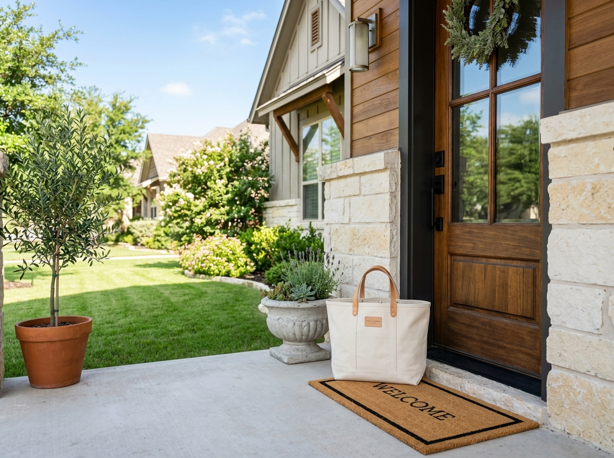
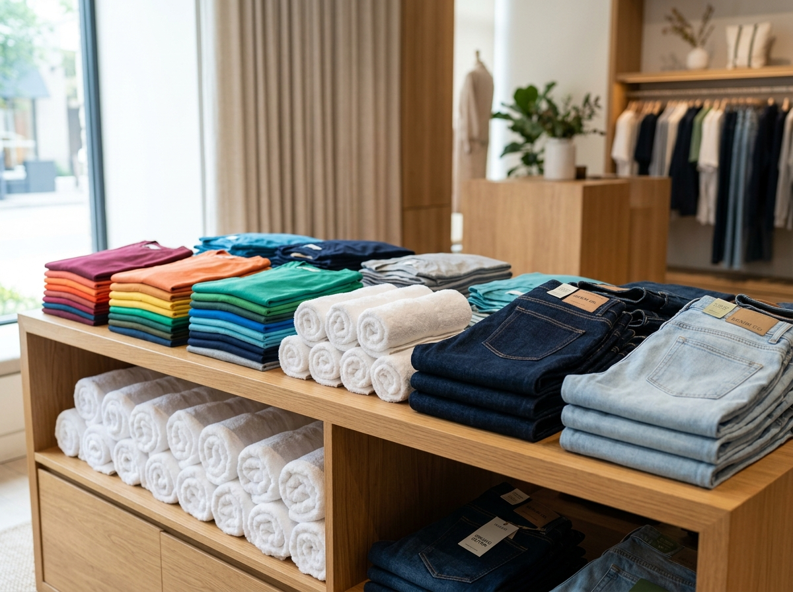

"Getting 4 hours of my Sunday back is priceless. Smells like heaven and folded cleaner than a department store. My kids' clothes were even sorted by size!"
★
Austin's #1 Doorstep Wash & Fold — 24-Hr Turnaround
Reclaim Your Weekend. We Wash, Fold & Deliver in 24 Hours.
No more folding laundry until midnight on Sunday. Leave your bags on the porch by 9 AM, get them back crisp, sanitized, and closet-ready tomorrow.
Licensed & Insured
1 Household Per Washer
Free Porch Pickup
Sarah Jenkins • Lead Care Specialist
"Every load is washed in its own machine and hand-folded like boutique retail. Guaranteed 24-hr turnaround."
Express Porch Pickup
Schedule in 30 seconds • Next-day return
The Standard Porch Bag (~30 lbs)
$35 Flat
Save $20+ vs typical per-pound ($1.75-$2.25/lb) cleaners
Porch Pickup & Drop
Zero contact needed. Toss clothes in any bag and leave them on your porch by 9 AM.
Dedicated Washer
1 household per commercial machine, always. Your clothes are never mixed or co-mingled.
Hypoallergenic Care
Choice of Free & Clear gentle detergent or crisp linen Tide. Safe for sensitive skin.
24-Hour Guarantee
Picked up by 9 AM today, back on your doorstep sanitized and drawer-ready tomorrow.
Effortless Routine
The 3-Step "Porch-to-Closet" Process
No scheduling phone calls, no waiting at dry cleaners. We handle your entire family's wash cycle while you live your life.
01
Bag & Leave on Your Porch
Toss your dirty laundry into any standard bag or hamper. Set it on your front porch or parcel locker before 9 AM on your chosen pickup morning.
- No need to be home for pickup or delivery
- Driver sends SMS photo confirmation the second it's collected

Step 1: Contactless Porch Pickup
02
Custom Washed & Sanitized
Your clothes enter their own dedicated commercial machine. We never mix households. Washed with hypoallergenic detergent, temperature-controlled drying, and hand-folded like retail.
- 100% Dedicated machine per family guarantee
- Free & Clear or custom fresh scent selection
Step 2: Sanitized & Retail Folded
03
Porch Delivery Next Day
Returned to your doorstep within 24 hours in weather-proof protective packaging. Shirts grouped together, jeans crisp, and socks paired—ready to drop straight into your drawers.
- Weather-shield protective bundles
- Drawer-ready grouping saves 4+ hours every Sunday
Step 3: Sundays Reclaimed

Retail Precision Standards
Folded Better Than Boutique Displays
We don't just dump clothes in a bag. Every single piece is hand-folded according to strict retail dimensions so they slide straight into your dressers without creasing.
Color & Family Member Sorting
Children's items, athletic wear, and adult clothing are packed in separate sub-bundles.
Anti-Wrinkle Temperature Chill
Linens are removed hot and folded immediately during cool-down to lock out stubborn wrinkles.
Transparent Rates
Zero Hidden Fees. Zero Per-Pound Anxiety.
No surprise bills when you pick up. Know exactly what you'll pay before your bag even leaves the front porch.
Most Popular for Austin Homes
Everyday Wash & Fold
Ideal for working couples and weekly family casual loads.
$
35
/ flat standard bag (~30 lbs)
- Fits ~25 shirts, 5 jeans, 8 towels & socks
- Guaranteed 24-hour porch return
- Dedicated machine & hypoallergenic rinse
- Custom poundage: $1.75/lb for loose bags
Bedding & Comforter Reset
Heavy-duty care for bulky duvets, quilts, and seasonal blankets.
$
25
/ flat per bulky item
- King, Queen, or Twin comforters & duvets
- Deep anti-allergen steam sanitization
- High-capacity gentle tumble drying
- Breathable zip storage bag included
Weekly Family Plan
Total laundry delegation for busy households and dual-income parents.
$
120
/ month (4 pickups)
- 4 Standard Porch Bags per month
- Save $20/month compared to single runs
- Reserved guaranteed Monday/Thursday slot
- Pause or cancel anytime with 1 click
Clear Answers
Frequently Asked Questions
Everything you need to know about our Austin doorstep laundry pickup service.
Do you wash my clothes with other people's laundry?
Never. That is our strict brand guarantee. Every household's laundry is assigned its own dedicated commercial washer and dryer. Your clothes, towels, and delicates will never touch another family's garments under any circumstances.
Do I need to be home when you pick up or drop off?
No, you don't need to wait around or interrupt your schedule. Just leave your laundry bag on your front porch, parcel locker, or gated breezeway before 9:00 AM on pickup morning. Our driver will send you an SMS with a photo confirmation the moment it's collected and when it's returned clean the next day.
What kind of detergent and fabric care products do you use?
By default, we use hypoallergenic, dye-free, unscented Free & Clear detergent that is gentle on infant skin and sensitive complexions. If you prefer a crisp, fresh scent, you can select premium Tide with Downy Fresh Linen at no extra charge.
How does payment work if I don't pay upfront?
We never require credit card details to book a pickup. When our team inspects and prepares your order for return delivery, we send a secure payment link via SMS (Apple Pay, Google Pay, or Credit Card). You pay only after your laundry is washed, folded, and on its way back.
What happens if it rains while my clothes are on the porch?
All cleaned and folded laundry is delivered in sealed, heavy-duty weather-proof protective bundles. Even during Texas downpours, your fresh clothing remains 100% dry and protected until you bring it indoors.
Which Austin areas and zip codes do you cover?
We provide free doorstep pickup throughout Greater Austin, including North Austin (78758, 78759), Downtown/Central (78701, 78703, 78705), Mueller (78722, 78723), South Congress (78704), Round Rock (78664, 78665), Pflugerville (78660), and Cedar Park (78613).
Stop Spending Your Sundays Doing Laundry.
Leave your hamper on the porch tomorrow by 9 AM. Spend your weekend at Zilker Park, watching football, or with family while we do the work.